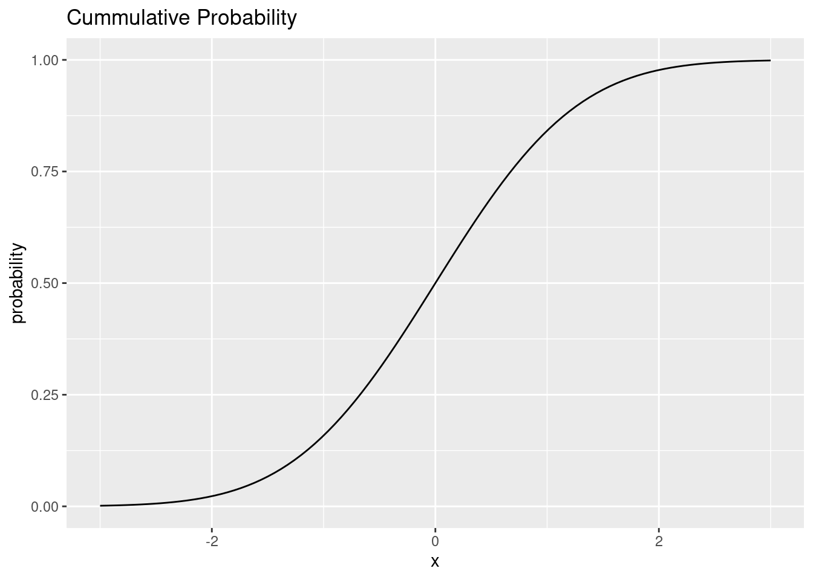
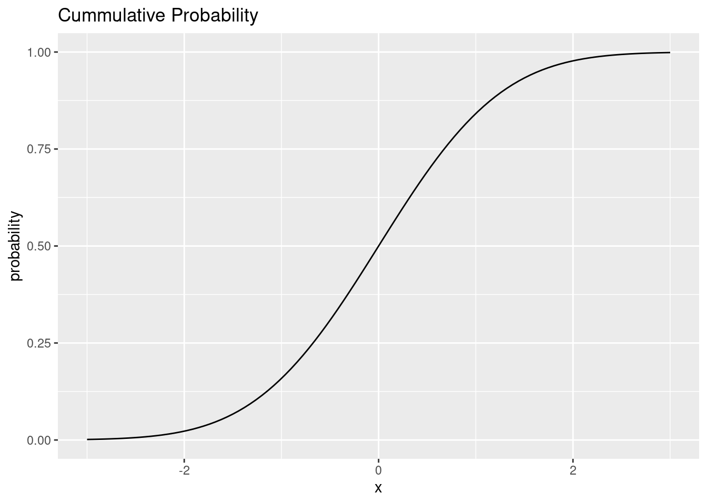

Lesson 4 Functions
… which is all about functions, bringing the whole tidyverse together and exploring advanced dplyr data wrangling techniques.
4.1 Motivation
My goal today is to bring together everything we learned so far and solidify our understanding of wrangling data in the tidyverse. If all goes according to plan, we will then have more mental capacity freed up for the statistics starting next week. And our understanding of data will hopefully enable us to experiment and play with statistical concepts without getting stuck too much on data wrangling. This also means that today’s lecture might be the most challenging so far, because everything learned up until now will – in one way or another – be relevant.
As you might be able to tell, mental models are one of my favorite topics. We are starting today with a powerful mental model teased at last week. I am talking about iteration.
4.2 Iteration
Iteration is the basic idea of doing one thing multiple times. This is an area where computers shine, so in this chapter we will learn to fully utilize the power at our fingertips.
We had our first encounter with iteration in a very implicit form. When we use R’s basic math operators, the computer is iterating behind the scenes. Take this expression:
1:3 + 1:3## [1] 2 4 6This operation is vectorized. Without us having to tell R to do so, R will add the first element of the first vector to the first element of the second vector and so forth.
Notice, how it looks like the operation happens all at the same time. But in reality, this is not what happens. The computer is just really fast at adding numbers, one after the other.
The mathematical operations in R call another programming language that does the actual addition. This other programming language is closer to the way computers think, making it less fun to write for us humans, but also faster because the instructions are easier to translate into actions for our computer processor.
When we find a task that we want to apply to multiple things, and this task is not already vectorized, we need to make our own iteration. There are actually two schools of though on how to talk about iteration and consequently, how to write it in code.
I will use a realworld example to illustrate this: Reading in Multiple Files
4.2.1 Functional Programming
Remember the gapminder dataset? Well, we are working with it again, but this
time, our collaborator sent us one csv-file for each continent. As usual, we
load the tidyverse first. For the script I also load the rmarkdown package and
the knitr package to have more control over printing tables.
We already know how to read in one csv-file:
# n_max = 3 is just here for the script
read_csv("data/04/Africa.csv", n_max = 3)## # A tibble: 3 x 5
## country year lifeExp pop gdpPercap
## <chr> <dbl> <dbl> <dbl> <dbl>
## 1 Algeria 1952 43.1 9279525 2449.
## 2 Algeria 1957 45.7 10270856 3014.
## 3 Algeria 1962 48.3 11000948 2551.We have a function (read_csv) that takes a file path and returns
(spits out) the data. In this first school of thought, the Functional
Programming style, the next idea is to have a function, that takes two things: a
function and a vector (atomic or list). And it feeds the individual elements of
the vector to the function, one after another. In mathematics, the relation
between a set of inputs and a set of outputs is called a
map, which is where the name of the following family of functions comes
from. In the tidyverse, these functional programming concepts live in the
purrr package.
First, we create the vector of things that we want to iterate over, the things that will be fed into our function one after the other:
paths <- dir("data/04/", full.names = TRUE)
paths## [1] "data/04//Africa.csv" "data/04//Americas.csv" "data/04//Asia.csv"
## [4] "data/04//Europe.csv" "data/04//Oceania.csv"Now we have 5 file paths. We can test our understanding by passing just one of
them to read_csv to make sure our function works:
read_csv(paths[[1]], n_max = 3)## # A tibble: 3 x 5
## country year lifeExp pop gdpPercap
## <chr> <dbl> <dbl> <dbl> <dbl>
## 1 Algeria 1952 43.1 9279525 2449.
## 2 Algeria 1957 45.7 10270856 3014.
## 3 Algeria 1962 48.3 11000948 2551.It is time for the map function!
all_datasets <- map(paths, read_csv)That’s it! We now have a list that contains all five datasets.
But we lost the information about which file the elements of the list came from,
which is the name if the continent! We can fix this by using a named list
instead of a regular list to pass to map:
The function str_remove is part of the stringr package
in the tidyverse. It’s functions, which handle
all kinds of operations on text, start with str_.
And now we can combine them into one big dataset
using bind_rows, which stacks tibbles on top of each other.
The extra argument .id determines the name for the column
in which we store the names of the list
items.
my_data %>%
bind_rows(.id = "continent")## # A tibble: 1,704 x 6
## continent country year lifeExp pop gdpPercap
## <chr> <chr> <dbl> <dbl> <dbl> <dbl>
## 1 Africa Algeria 1952 43.1 9279525 2449.
## 2 Africa Algeria 1957 45.7 10270856 3014.
## 3 Africa Algeria 1962 48.3 11000948 2551.
## 4 Africa Algeria 1967 51.4 12760499 3247.
## 5 Africa Algeria 1972 54.5 14760787 4183.
## 6 Africa Algeria 1977 58.0 17152804 4910.
## 7 Africa Algeria 1982 61.4 20033753 5745.
## 8 Africa Algeria 1987 65.8 23254956 5681.
## 9 Africa Algeria 1992 67.7 26298373 5023.
## 10 Africa Algeria 1997 69.2 29072015 4797.
## # … with 1,694 more rowsThere is yet another shortcut we can employ. The purrr package contains
various variants of the map function. map itself will always return a list,
whereas variants like map_chr always return an atomic character
vector,map_dbl always returns numbers, map_lgl always return logical (yes or
no, TRUE / FALSE) vectors. Combining a list into one dataframe (by rows) is so
common that there is also a special map function for this: map_dfr.
gapminder <- map_dfr(paths, read_csv, .id = "continent")
gapminder## # A tibble: 1,704 x 6
## continent country year lifeExp pop gdpPercap
## <chr> <chr> <dbl> <dbl> <dbl> <dbl>
## 1 Africa Algeria 1952 43.1 9279525 2449.
## 2 Africa Algeria 1957 45.7 10270856 3014.
## 3 Africa Algeria 1962 48.3 11000948 2551.
## 4 Africa Algeria 1967 51.4 12760499 3247.
## 5 Africa Algeria 1972 54.5 14760787 4183.
## 6 Africa Algeria 1977 58.0 17152804 4910.
## 7 Africa Algeria 1982 61.4 20033753 5745.
## 8 Africa Algeria 1987 65.8 23254956 5681.
## 9 Africa Algeria 1992 67.7 26298373 5023.
## 10 Africa Algeria 1997 69.2 29072015 4797.
## # … with 1,694 more rowsNow that was efficient! It only took us a couple of lines. We can even do the whole thing in one chain of functions using the pipe. But keep in mind that this is not the way we came up with it. No one expects you to come up with the shortest and most concise solution on the first go. But sometimes it can pay off to revisit your first solution that involves multiple temporary variables we don’t really need for the rest of the script and clean it up a bit. This might make it easier to come back to your code in the future and be able to read what is going on faster (because there are less lines to read).
gapminder <-
dir("data/04/", full.names = TRUE) %>%
set_names(function(name) basename(name) %>% str_remove("\\.csv")) %>%
map_dfr(read_csv, .id = "continent")I want to take a moment to introduce yet another
shortcut we can take.
Notice, how in set_names I created a function to process
the names without giving it a name.
This is called an anonymous function.
Sometimes people also call it a lambda function,
because it originates from something called
lambda calculus.
Because the tilde symbol ~ is the
closest we get to \(\lambda\) on an English keyboard,
this is used to create anonymous functions
on the fly.
The don’t even have to worry about names
for our arguments, it automatically
creates a function where the argument
is named “.x” (and “.y” if you need multiple
arguments).
See the documentation of map,
especially the .f argument,
for more information.
4.2.2 The Imperative Programming Approach
There are other ways we could have gone about this. A common construct in programming languages is the so called for-loop. For every element of a vector, the body of the loop runs. For our example, it would look like this:
paths <- dir("data", full.names = TRUE)
results <- vector("list", length(paths))
for (i in 1:length(paths)) {
data <- read_csv(paths[i])
results[[i]] <- data
}
names(results) <- basename(paths) %>% str_remove("\\.csv")
gapminder <- bind_rows(results, .id = "continent")The for-loop-version has a lot more code, especially boilerplate, code that is
just there to make the construct work and doesn’t convey our intentions with the
code. Furthermore, the loop focuses the object that is iterated over (the file
paths), while the map-version focuses on what is happening (the function,
read_csv). But the loop still works. If you can’t think of a way to solve a
problem with a map function, it is absolutely OK to use for-loops.
The first approach with the map function comes from Functional Programming,
whereas the second approach is considered Imperative Programming. In general, in
Functional Programming, we tell the computer what we want, while in
Imperative Programming, we tell the computer what steps to do. So keep in
mind:
»Of course someone has to write for-loops. It doesn’t have to be you.«
— Jenny Bryan
And don’t miss the amazing purrr cheatsheet:
link
4.3 “If you copy and paste the same code more than three times, write a function.”
4.3.1 Noticing a Pattern
Writing our own functions can be very helpful for making our code more readable. It allows us to separate certain steps of your analysis from the rest, look at them in isolation to test and validate them, and also allows us to give them reasonable names. Let’s look at a couple of examples and get you writing functions! Say we have this idea, where we filter the gapminder dataset for one country, check how linear the relationship between year and life expectancy is and then create a plot.
filterd_data <- gapminder %>%
filter(country == "Norway")
model <- lm(lifeExp ~ year, data = filterd_data)These three function from the broom package
tell us more about our linear model created with lm.
It is part of the tidymodels framework.
broom::tidy(model)## # A tibble: 2 x 5
## term estimate std.error statistic p.value
## <chr> <dbl> <dbl> <dbl> <dbl>
## 1 (Intercept) -185. 16.2 -11.4 0.000000460
## 2 year 0.132 0.00819 16.1 0.0000000176
broom::augment(model)## # A tibble: 12 x 8
## lifeExp year .fitted .resid .hat .sigma .cooksd .std.resid
## <dbl> <dbl> <dbl> <dbl> <dbl> <dbl> <dbl> <dbl>
## 1 72.7 1952 72.2 0.455 0.295 0.483 0.256 1.11
## 2 73.4 1957 72.9 0.566 0.225 0.470 0.250 1.31
## 3 73.5 1962 73.5 -0.0640 0.169 0.516 0.00209 -0.143
## 4 74.1 1967 74.2 -0.114 0.127 0.515 0.00450 -0.249
## 5 74.3 1972 74.9 -0.513 0.0991 0.484 0.0671 -1.10
## 6 75.4 1977 75.5 -0.143 0.0851 0.514 0.00434 -0.306
## 7 76.0 1982 76.2 -0.203 0.0851 0.511 0.00872 -0.433
## 8 75.9 1987 76.8 -0.943 0.0991 0.396 0.226 -2.03
## 9 77.3 1992 77.5 -0.172 0.127 0.512 0.0103 -0.377
## 10 78.3 1997 78.2 0.168 0.169 0.512 0.0144 0.376
## 11 79.0 2002 78.8 0.238 0.225 0.508 0.0443 0.553
## 12 80.2 2007 79.5 0.725 0.295 0.429 0.649 1.76
broom::glance(model)## # A tibble: 1 x 12
## r.squared adj.r.squared sigma statistic p.value df logLik AIC BIC
## <dbl> <dbl> <dbl> <dbl> <dbl> <dbl> <dbl> <dbl> <dbl>
## 1 0.963 0.959 0.490 260. 0.0000000176 1 -7.37 20.7 22.2
## # … with 3 more variables: deviance <dbl>, df.residual <int>, nobs <int>The \(R^2\) value tells us, how well a straight line fits to our data. It can assume values between 0 and 1.
model_glance <- broom::glance(model)
text <- substitute(R^2 == rsq,
list(rsq = round(model_glance$r.squared, 2)))
filterd_data %>%
ggplot(aes(year, lifeExp)) +
geom_smooth(method = "lm") +
geom_line() +
geom_point() +
theme_classic() +
labs(
x = "Year",
y = "Life Expectancy",
title = "Norway",
subtitle = text
)
Then we get curious and want to know how this graph looks for another country. So we copy and paste our code and replace the name of the country. And yet again, we want to see this plot for another country, so we copy and paste our code, change the country name and keep going. This is when we remember, that there is an easier way to deal with this repetition. We look at our code again and identify the things that stay the same and the things that change during each copy and pasting. The things that stay the same will be the body of our function, the things that change will be variables in the body that we pass to the function as arguments. In our example, there is only one thing that changes every time: the name of the country. So we build the following function:
plot_life_exp_for_country <- function(country_name) {
filterd_data <- gapminder %>%
filter(country == country_name)
model <- lm(lifeExp ~ year, data = filterd_data)
model_glance <- broom::glance(model)
text <- substitute(R^2 == rsq,
list(rsq = round(model_glance$r.squared, 2)))
filterd_data %>%
ggplot(aes(year, lifeExp)) +
geom_smooth(method = "lm") +
geom_line() +
geom_point() +
theme_classic() +
labs(
x = "Year",
y = "Life Expectancy",
title = country_name,
subtitle = text
)
}Then we test the function a bunch to make sure it works for different cases:
plot_life_exp_for_country("India")
plot_life_exp_for_country("Mali") 

4.3.2 Where to put your Functions
At this point you might wonder where to put this function.
A good starting point is to collect your
functions near the top of your document or script,
below where you load all packages.
Another approach, especially if you have functions
that you can use for multiple projects,
is to put them in a .R file and load
this file at the beginning of your document.
You can do so using the function source("path/to/file.R").
It runs the R file in your current sessions,
so any functions and variables defined
in there are now available to you.
source("R/my_funs.R")Just like this.
say_hello()I like to store my regular R files
(as opposed to Rmd files) in
a folder of my project called R.
This makes it already look like an R package,
in case I decide later on that the functions
could be helpful for others as well
or I want to share them more easily
with colleagues.
You can read more about creating your
own R packages here.30
4.4 Many Models
Let us use the techniques above to shine light on how life expectancies changed over time. This time, we will utilize the nested data format to store our data alongside models for the data.
nested_gapminder <- gapminder %>%
nest(-country, -continent) %>%
mutate(
model = map(data, ~ lm(lifeExp ~ year, data = .x))
)
nested_gapminder## # A tibble: 142 x 4
## continent country data model
## <chr> <chr> <list> <list>
## 1 Africa Algeria <tibble [12 × 4]> <lm>
## 2 Africa Angola <tibble [12 × 4]> <lm>
## 3 Africa Benin <tibble [12 × 4]> <lm>
## 4 Africa Botswana <tibble [12 × 4]> <lm>
## 5 Africa Burkina Faso <tibble [12 × 4]> <lm>
## 6 Africa Burundi <tibble [12 × 4]> <lm>
## 7 Africa Cameroon <tibble [12 × 4]> <lm>
## 8 Africa Central African Republic <tibble [12 × 4]> <lm>
## 9 Africa Chad <tibble [12 × 4]> <lm>
## 10 Africa Comoros <tibble [12 × 4]> <lm>
## # … with 132 more rowsThen, we extract information about the model with some functions form the broom package.
nested_gapminder %>%
mutate(
glance = map(model, broom::glance)
)## # A tibble: 142 x 5
## continent country data model glance
## <chr> <chr> <list> <list> <list>
## 1 Africa Algeria <tibble [12 × 4]> <lm> <tibble [1 × 12]>
## 2 Africa Angola <tibble [12 × 4]> <lm> <tibble [1 × 12]>
## 3 Africa Benin <tibble [12 × 4]> <lm> <tibble [1 × 12]>
## 4 Africa Botswana <tibble [12 × 4]> <lm> <tibble [1 × 12]>
## 5 Africa Burkina Faso <tibble [12 × 4]> <lm> <tibble [1 × 12]>
## 6 Africa Burundi <tibble [12 × 4]> <lm> <tibble [1 × 12]>
## 7 Africa Cameroon <tibble [12 × 4]> <lm> <tibble [1 × 12]>
## 8 Africa Central African Republic <tibble [12 × 4]> <lm> <tibble [1 × 12]>
## 9 Africa Chad <tibble [12 × 4]> <lm> <tibble [1 × 12]>
## 10 Africa Comoros <tibble [12 × 4]> <lm> <tibble [1 × 12]>
## # … with 132 more rowsThen we go ahead and unnest the information about the model. We can now see, which countries stray the farthest from a straight line by arranging by the \(R^2\) values.
gapminder_modeled <- nested_gapminder %>%
mutate(
glance = map(model, broom::glance)
) %>%
unnest(glance) %>%
arrange(r.squared)
gapminder_modeled## # A tibble: 142 x 16
## continent country data model r.squared adj.r.squared sigma statistic p.value
## <chr> <chr> <lis> <lis> <dbl> <dbl> <dbl> <dbl> <dbl>
## 1 Africa Rwanda <tib… <lm> 0.0172 -0.0811 6.56 0.175 0.685
## 2 Africa Botswa… <tib… <lm> 0.0340 -0.0626 6.11 0.352 0.566
## 3 Africa Zimbab… <tib… <lm> 0.0562 -0.0381 7.21 0.596 0.458
## 4 Africa Zambia <tib… <lm> 0.0598 -0.0342 4.53 0.636 0.444
## 5 Africa Swazil… <tib… <lm> 0.0682 -0.0250 6.64 0.732 0.412
## 6 Africa Lesotho <tib… <lm> 0.0849 -0.00666 5.93 0.927 0.358
## 7 Africa Cote d… <tib… <lm> 0.283 0.212 3.93 3.95 0.0748
## 8 Africa South … <tib… <lm> 0.312 0.244 4.74 4.54 0.0588
## 9 Africa Uganda <tib… <lm> 0.342 0.276 3.19 5.20 0.0457
## 10 Africa Congo,… <tib… <lm> 0.348 0.283 2.43 5.34 0.0434
## # … with 132 more rows, and 7 more variables: df <dbl>, logLik <dbl>,
## # AIC <dbl>, BIC <dbl>, deviance <dbl>, df.residual <int>, nobs <int>For a more detailed walk-trough, check out the chapter on “many models” in R for Data Science here.31
Let’s use this information to build a visualization.
non_linear_countries <- gapminder_modeled %>%
filter(r.squared < 0.2) %>%
unnest(data)
non_linear_countries## # A tibble: 72 x 19
## continent country year lifeExp pop gdpPercap model r.squared
## <chr> <chr> <dbl> <dbl> <dbl> <dbl> <list> <dbl>
## 1 Africa Rwanda 1952 40 2534927 493. <lm> 0.0172
## 2 Africa Rwanda 1957 41.5 2822082 540. <lm> 0.0172
## 3 Africa Rwanda 1962 43 3051242 597. <lm> 0.0172
## 4 Africa Rwanda 1967 44.1 3451079 511. <lm> 0.0172
## 5 Africa Rwanda 1972 44.6 3992121 591. <lm> 0.0172
## 6 Africa Rwanda 1977 45 4657072 670. <lm> 0.0172
## 7 Africa Rwanda 1982 46.2 5507565 882. <lm> 0.0172
## 8 Africa Rwanda 1987 44.0 6349365 848. <lm> 0.0172
## 9 Africa Rwanda 1992 23.6 7290203 737. <lm> 0.0172
## 10 Africa Rwanda 1997 36.1 7212583 590. <lm> 0.0172
## # … with 62 more rows, and 11 more variables: adj.r.squared <dbl>, sigma <dbl>,
## # statistic <dbl>, p.value <dbl>, df <dbl>, logLik <dbl>, AIC <dbl>,
## # BIC <dbl>, deviance <dbl>, df.residual <int>, nobs <int>I also like to use this opportunity to
mention a couple of packages to take your
visualizations the the next level.
Today, these are ggrepel to produce
labels that dodge each other,
and the fisualize package, which
contains color scales of tropical fish.
plt <- gapminder %>%
ggplot(aes(year, lifeExp, group = country)) +
geom_line(alpha = 0.2) +
geom_line(data = non_linear_countries,
mapping = aes(color = country),
size = 1.7) +
fishualize::scale_color_fish_d() +
labs(y = "Life Expectancy at Birth") +
ggrepel::geom_text_repel(data = filter(non_linear_countries, year == max(year)),
aes(label = country, color = country),
hjust = 0, direction = "y") +
expand_limits(x = 2015) +
theme_minimal() +
guides(color = "none")
plt
Sometimes it is also very handy (and probably impressive
to whoever receives your report) to turn a plot
into an interactive graphic.
plotly is a library that produces interactive plots,
but we don’t even have to learn about its intricacies
because it comes with a function to convert a ggplot
to the interactive format that works quite well for
a range (but not all) of use-cases:
plotly::ggplotly(plt)The downward slope of our highlighted countries starting in the 1990s is a result of the ravaging AIDS pandemic. The prominent dips in two of the curves, orange for Rwanda and Cambodia in gray, are the direct consequences of genocides. These dire realities can in no way be summarized in just a couple of colorful lines. I am also in no way qualified to lecture on these topics. A good friend of mine, Timothy Williams, however is a researcher and teacher in the field of conflict and violence with a focus on genocides. He did field work in Cambodia and Rwanda and his book “The Complexity of Evil. Perpetration and Genocide” will be published here on December 18.32
4.5 Advanced dplyr
Last but not least, I want to mention a powerful advanced
function in dplyr to make your data transformations even
more efficient.
It is the across function, which we can use
inside of dplyr verbs such as mutate and
summarise to use one or multiple functions on
multiple columns.
Let’s look at an example, again with the gapminder
dataset.
Now, this is sort of a silly example,
but let’s say we want the continents
and countries in UPPERCASE.
We could do:
gapminder %>%
mutate(
continent = str_to_upper(continent),
country = str_to_upper(country)
)## # A tibble: 1,704 x 6
## continent country year lifeExp pop gdpPercap
## <chr> <chr> <dbl> <dbl> <dbl> <dbl>
## 1 AFRICA ALGERIA 1952 43.1 9279525 2449.
## 2 AFRICA ALGERIA 1957 45.7 10270856 3014.
## 3 AFRICA ALGERIA 1962 48.3 11000948 2551.
## 4 AFRICA ALGERIA 1967 51.4 12760499 3247.
## 5 AFRICA ALGERIA 1972 54.5 14760787 4183.
## 6 AFRICA ALGERIA 1977 58.0 17152804 4910.
## 7 AFRICA ALGERIA 1982 61.4 20033753 5745.
## 8 AFRICA ALGERIA 1987 65.8 23254956 5681.
## 9 AFRICA ALGERIA 1992 67.7 26298373 5023.
## 10 AFRICA ALGERIA 1997 69.2 29072015 4797.
## # … with 1,694 more rowsAnd now everyone is really shouty.
But we had some repetition in
our code. Wouldn’t it be cool,
to just say: “Apply the function str_to_upper
to these columns.”
gapminder %>%
mutate(
across(c(continent, country), str_to_upper)
)## # A tibble: 1,704 x 6
## continent country year lifeExp pop gdpPercap
## <chr> <chr> <dbl> <dbl> <dbl> <dbl>
## 1 AFRICA ALGERIA 1952 43.1 9279525 2449.
## 2 AFRICA ALGERIA 1957 45.7 10270856 3014.
## 3 AFRICA ALGERIA 1962 48.3 11000948 2551.
## 4 AFRICA ALGERIA 1967 51.4 12760499 3247.
## 5 AFRICA ALGERIA 1972 54.5 14760787 4183.
## 6 AFRICA ALGERIA 1977 58.0 17152804 4910.
## 7 AFRICA ALGERIA 1982 61.4 20033753 5745.
## 8 AFRICA ALGERIA 1987 65.8 23254956 5681.
## 9 AFRICA ALGERIA 1992 67.7 26298373 5023.
## 10 AFRICA ALGERIA 1997 69.2 29072015 4797.
## # … with 1,694 more rowsNot that is raw power! We can be even more general and ask R to apply the function to all columns that contain text:
gapminder %>%
mutate(
across(where(is.character), str_to_upper)
)## # A tibble: 1,704 x 6
## continent country year lifeExp pop gdpPercap
## <chr> <chr> <dbl> <dbl> <dbl> <dbl>
## 1 AFRICA ALGERIA 1952 43.1 9279525 2449.
## 2 AFRICA ALGERIA 1957 45.7 10270856 3014.
## 3 AFRICA ALGERIA 1962 48.3 11000948 2551.
## 4 AFRICA ALGERIA 1967 51.4 12760499 3247.
## 5 AFRICA ALGERIA 1972 54.5 14760787 4183.
## 6 AFRICA ALGERIA 1977 58.0 17152804 4910.
## 7 AFRICA ALGERIA 1982 61.4 20033753 5745.
## 8 AFRICA ALGERIA 1987 65.8 23254956 5681.
## 9 AFRICA ALGERIA 1992 67.7 26298373 5023.
## 10 AFRICA ALGERIA 1997 69.2 29072015 4797.
## # … with 1,694 more rowsIt also works with summarise, for example
to create summaries across a range of columns.
And we can supply more than one function to calculate
using a named list:
gapminder %>%
summarise(
across(year:gdpPercap, list(mean = mean, total = sum))
)## # A tibble: 1 x 8
## year_mean year_total lifeExp_mean lifeExp_total pop_mean pop_total
## <dbl> <dbl> <dbl> <dbl> <dbl> <dbl>
## 1 1980. 3373068 59.5 101344. 29601212. 50440465801
## # … with 2 more variables: gdpPercap_mean <dbl>, gdpPercap_total <dbl>You are on you way to becoming a true data wizard! After today, you should be familiar with:
- importing data into R
- the concept of tidy data
- the grammar of graphics
- the basic dplyr verbs for data wrangling
- a project-based workflow
- writing and using functions
We will then use these foundations to experience statistical concepts ourselves in the next lectures.
4.7 The whole Deal
I want to get you playing around with data, so keep in mind that the solutions for this exercise are not set in stone. There is often more than one viable way of graphing the same dataset and we will use the Office Hour to talk about the advantages and disadvantages of approaches that you came up with.
4.7.1 Roman emperors
The first exercise uses a dataset about roman emperors from the tidytuesday project (link). You can import it with:
emperors <- readr::read_csv("https://raw.githubusercontent.com/rfordatascience/tidytuesday/master/data/2019/2019-08-13/emperors.csv")Here are a couple of questions to answer. Decide for yourselves if a particular question is best answered using a visualization, a table or a simple sentence.
- What was the most popular way to rise to power?
- I what are the most common causes of death among roman emperors, what (or who) killed them?
- Which dynasty was the most successful?
- Firstly, how often did each dynasty reign?
- Secondly, how long where the reigns?
- Which dynasty would you rather be a part of, if your goal is to live the longest?
4.7.2 Dairy Products in the US
Another dataset (link) concerns dairy product consumption per person in the US across a number of years. Load it with
dairy <- readr::read_csv("https://raw.githubusercontent.com/rfordatascience/tidytuesday/master/data/2019/2019-01-29/milk_products_facts.csv")- All masses are given in lbs (pounds), can you convert them to kg?
- Which products lost their customer base over time, which ones won?
Above all, have some fun! If you make interesting findings along the way, go ahead and produce plots to highlight it.